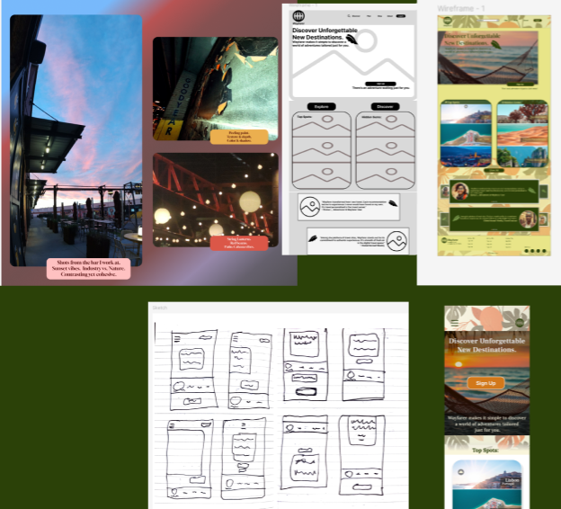
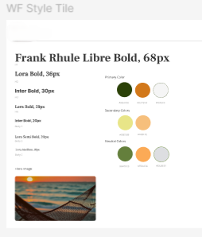
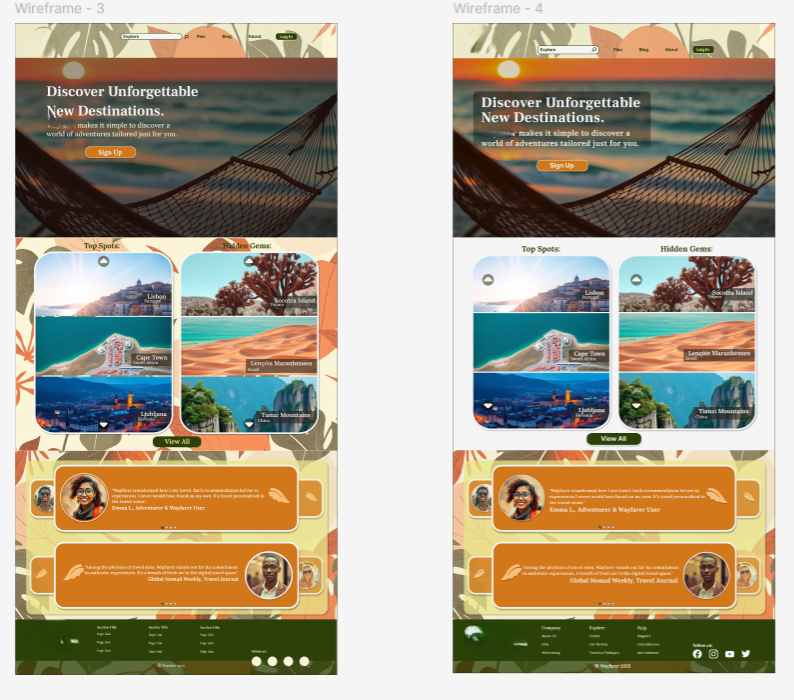

Designing systems that reduce cognitive load and support real people in real contexts.
My UX work comes from lived experience — designing tools for people managing complex routines, fluctuating abilities, and high-stakes daily tasks. I approach interfaces the same way I approach games and worlds: through systems, empathy, and iteration.
Below are two projects that show how I think, how I design, and how I adapt solutions to the constraints of real users, real devices, and real environments.
(Name intentionally withheld for privacy)
A mobile app designed for someone close to me who manages a complex medication schedule across multiple pharmacies. This wasn't a hypothetical assignment — it was a real problem with real consequences.
The system includes a full-featured primary app for the person managing medications, and a lightweight helper app for trusted supporters. Both are designed around clarity, autonomy, and safety.
Existing apps assumed medical literacy, stable devices, and perfect attention. This system needed to adapt to the user — not the other way around.
A medication management system built around:
Everything is designed to reduce friction and keep life-critical information visible.
A complexity slider (0–100%) that adapts the UI to the user's cognitive load and comfort level.
Low complexity → large buttons, high contrast, essentials only
High complexity → compact controls, full medical detail
Why it matters: People have different abilities on different days. The interface adjusts accordingly.
Designed to work on anything from a budget Android to a new iPhone.
Tier 1: simple lists, minimal animations
Tier 2: rich cards, medication photos
Tier 3: predictive insights, pattern learning
When the device overheats, the UI simplifies automatically: reduces animations, caches data, prioritizes critical functions.
A hierarchy based on medical priority:
Emergency protocols → Weight 10
Medication names → Weight 8
Schedule times → Weight 6
Notes → Weight 3
Designed for users who benefit from reduced cognitive load.
Basic mode: "Take 2 pills now"
Advanced mode: dosage, interactions, refill status, insurance info
User: "I take this twice daily with breakfast."
App: builds the schedule, reminders, and pharmacy link automatically.
Role-based permissions for real-world support networks: Primary user, Trusted supporter (helper app), Extended support (optional).
A lightweight companion app for trusted supporters.
What it does: Receives missed-dose alerts, syncs with the primary user's reminder settings, stores no sensitive medical data, works on low-end devices.
Why it matters: Medication management is rarely a solo task. This system supports real-world care networks without compromising privacy.
(Course project — original branding removed intentionally)
A 6-week mentor-guided UX/UI foundations course focused on core design skills: user research, wireframing, interaction design, usability testing, and accessibility.
The capstone assignment was to redesign a travel-planning service across mobile and web, improving clarity, navigation, and overall usability.
The original brand assets have been removed to keep the focus on the design process rather than the assignment's fictional company.



The provided travel service had several issues common to early-stage products:
The challenge was to create a cleaner, more intuitive experience that supported both quick trip planning and deeper exploration.
Users wanted clarity and momentum — fewer decisions upfront, clearer paths to action, and a layout that adapts to different device sizes.
The final design introduced:
The result was a more intuitive, approachable interface that supported both quick actions and deeper browsing.
Figma — FigJam — Photoshop
Visual assets available on request — screens shown without original branding.